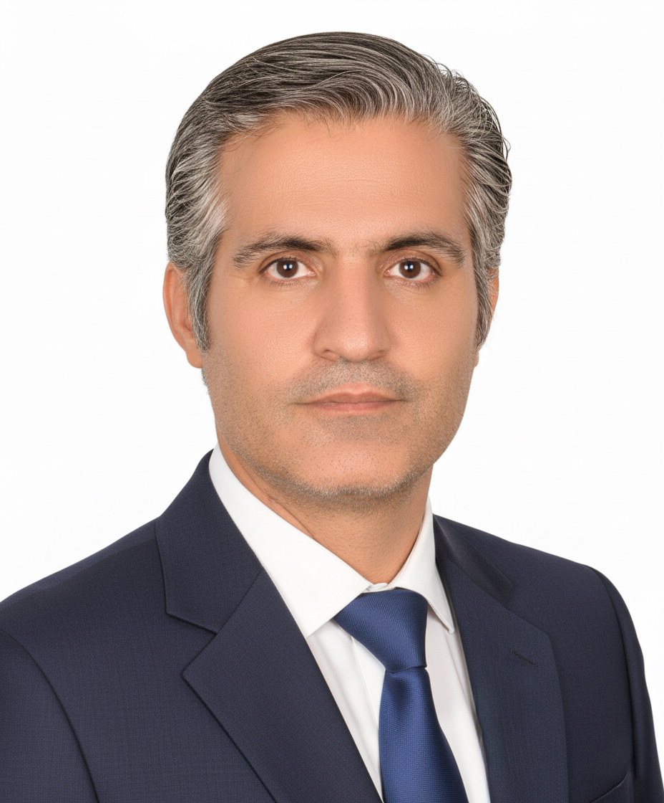

معرفی بنیانگذار و دانشمند ارشد هوش مصنوعی BaniNex — ترکیبی از مهندسی صنایع، PINN و کارآفرینی بینالمللی

من فرهاد کیانیفرد هستم. بیش از ۲۰ سال تجربه در مدیریت صنعتی، بهینهسازی کارخانهها و رهبری تیمهای بینالمللی داشتهام. مسیر حرفهای من از راهاندازی استارتآپهای فناورانه در حوزه مسیریابی و لجستیک (روسیه، بلاروس، اوکراین و منطقه بالتیک) آغاز شد و اکنون به عمیقترین چالشهای صنعت داروسازی رسیده است.
تخصص اصلی من شبکههای عصبی مبتنی بر فیزیک (PINN) است. با تکیه بر این توانمندی و عشق به حل مسائل بزرگ، موفق به فرمولهسازی سه داروی تزریقی آهستهرهش با فناوری ISF شدام که رهش یکماهه دارند. این دستاوردها برای دو شرکت بزرگ داروسازی کشور ارسال شده و هماکنون در حال توسعه داروهای جدید برای حوزه سرطان هستم.
اگر به دنبال شریکی با تخصص در هوش مصنوعی و صنعت داروسازی هستید، خوشحال میشوم با شما گفتگو کنم.
تماس بگیرید